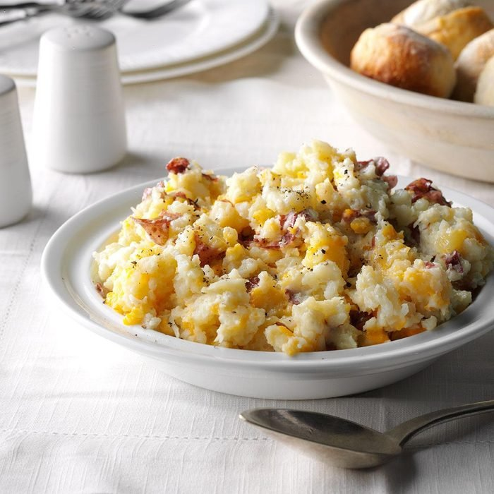

Cheese Smashed Potatoes

Ingredients
- 1 pound small red potatoes, quartered
- 1 cup fresh cauliflowerets
- 2/3 cup shredded reduced-fat cheddar cheese
- 1/4 cup reduced-fat sour cream
- 1/4 teaspoon salt
Steps
- Place potatoes in a large saucepan and cover with water. Bring to a boil. Reduce heat; cover and cook 10 minutes. Add cauliflower; cook until vegetables are tender, 10 minutes longer.
- Drain; mash with cheese, sour cream and salt.
Home